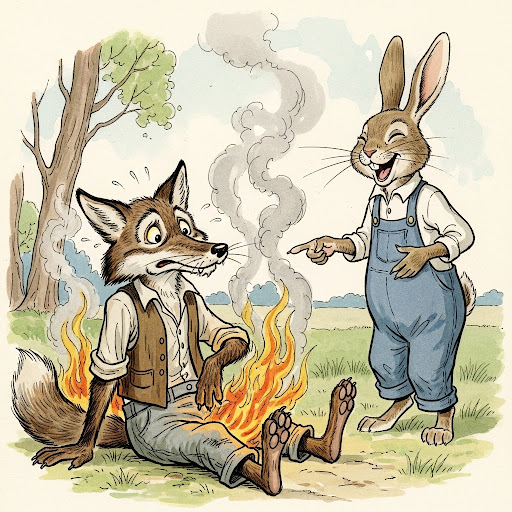

Tio Coyote Y Tío Conejo
Estera una vez una viejita que tenía una sandilla. “Sandillas” grandes de tierra negra. Un día por ahí, se vieron Tío Coyote y Tío Conejo, y como estaba madurando el sandillal, se concertaron para merendárselo. Tío Conejo cuidaba un rato y Tío Conejo comía, y así, al revés. Pero la viejita que estaba encariñada con su campito de frutas todos los días renegaba: “¡Bandidos, ladrones, me las van a pagar!”
El domingo, la viejita al salir de misa se fue donde el señor Obispo y le dijo:
— ¡Señor Obispo, le voy a mandar de regalo una gran sandillota; la más rica!
Y el señor Obispo la bendijo.
Pero Tío Conejo estaba en el patio robándose unas lechugas y oyó a la viejita y ay nomás salió en carrera donde Tío Coyote:
— Tío Coyote, vamos a hacerle una buena pasada a esta vieja renegona.
Y se fueron hablando.
A poquito llegó la viejita y ellos se escondieron detrás de unas matas. Y la viejita fue tanteando todas las sandillas, una por una:

— ¡Esta es la más hermosa! La voy a cuidar para el señor Obispo y pa que estos bandidos ladrones de fruta no la vean, la voy a poner bajo estas hojitas de plátano. Tío Coyote y Tío Conejo se estaban riendo y se volvían a ver. Y cuando se fue la viejita se fijaron dónde estaba la sandía y diario la iban a ver y la tanteaban. Bueno, pues; pasaron sus días y ya estaba bien madura la sandía. ¡Grande y hermosa, bien aseada! Y entonces Tío Conejo le abrió un hoyito y con la pata le fueron sacando y se fueron comiendo todo el corazón hasta que la dejaron vacía como calabazo. Y después se cargaron los dos dentro de la sandía y la volvieron a tapar dejándola a como estaba, bien disimulada. Al día siguiente llegó la viejita:
— ¡Qué buena sandilla! ¡Qué buen regalo para el señor Obispo!
Y fue a traer su rebozo y corló la sandía y se fue ligerita donde el señor Obispo.
— ¡Aquí le traigo este regalito, mi padrecito!
— ¡Muchas gracias, mijita, Dios te lo pague!
Y cuando llegó la hora del almuerzo el señor Obispo le dijo al Sacristán:
— Andá traeme un cuchillo grande bien filoso, pues yo mismo quiero partir esta sandilla tan hermosa.
Y ya se puso a partirla. Y pega el brinco. ¡Qué susto! ¡Estaba repleta de ñaña!
— ¡Buff!, dijo el Obispo, y la aventó de un lado. ¡Esta vieja puerca ahora verá!
Y mandó al sacristán que se la fuera a llamar.
La viejita llegó muy alegre, corriendo. “Esto es que el señor Obispo me quiere agradecer con algún regalo”, pensaba. Pero llegando, el señor Obispo estaba furioso y le dio una gran regañada y le enseño la ñaña de la sandilla y le dijo que se iba a ir al infierno por irrespetuosa.
Y se volvió triste. Y le iba echando maldiciones al que le hubiese hecho la trastada.
— Me las paga el que sea, dijo. Y puso a la entrada de la huerta un muñeco de breya (brea).
El tío Conejo, que es fachento, llegó ese día al frutal y vio el muñeco que le cortaba el paso:
— ¿Ideay, hombré? ¡Quitate de ahí o te quito!
Como el muñeco se quedó callado ay nomás le dio un trompón y se quedó pegada la mano en la breya.
— ¡Soltame o te pego!, le dijo Tío Conejo.
Y como el muñeco se quedó callado, le deja ir otro trompón y se pega de las dos manos.
— ¡Si no me soltás te pateo!
Y le da una patada y se pega de las dos patas.
Ya arrecho Tío Conejo porque estaba forcejeando para soltarse, dice otra vez:
— Si no me soltás, bandido, te pego un panzazo.
¡Y ónde le iba a responder el muñeco! Entonces— ¡Pas!— le da con la barriga y se pega todito.
En eso llega la vieja.
— ¡Esta es la más hermosa! La voy a cuidar para el señor Obispo y pa que estos bandidos ladrones de fruta no la vean, la voy a poner bajo estas hojitas de plátano. Tío Coyote y Tío Conejo se estaban riendo y se volvían a ver. Y cuando se fue la viejita se fijaron dónde estaba la sandía y diario la iban a ver y la tanteaban. Bueno, pues; pasaron sus días y ya estaba bien madura la sandía. ¡Grande y hermosa, bien aseada! Y entonces Tío Conejo le abrió un hoyito y con la pata le fueron sacando y se fueron comiendo todo el corazón hasta que la dejaron vacía como calabazo. Y después se cargaron los dos dentro de la sandía y la volvieron a tapar dejándola a como estaba, bien disimulada. Al día siguiente llegó la viejita:

¡Adiós, Tío Coyote! ¡Venga para acá!
Tío Coyote se le arrimó.
— ¿Qué estás haciendo encerrado ahí?
— Pues estoy esperando una gallina que me están cocinando. ¿No quiere acompañarme?
— Bueno, Tío Conejo.
— Entre por aquí entonces, Tío Coyote, le dijo Tío Conejo.
Y Tío Coyote por de fuera abrió la red y en lo que se iba metiendo, el Conejo salió en carrera. Ya estaba llegando la vieja cuando éso. Y traía un gran asador bien caliente, rojo.
— ¡Ahora verá ese cagón si no me las paga todas!
— Conque tenés tus mañas. ¡Velo al bandido!, ¡ya se hizo coyote! ¡Pero a mí nadie me engaña!
Y le mete el asador entre el culo. ¡Nunca había brincado tanto Tío Coyote! Y sale disparado pegando gritos y dándose contra los palos. Y ahí bajo de una mata estaba viendo todo Tío Conejo, y cuando pasó chiflado Tío Coyote, Tío Conejo, muerto de risa, le gritaba:
¡Adiós Tío Coyote, culo quemado! ¡Adiós tío Coyote, culo quemado!